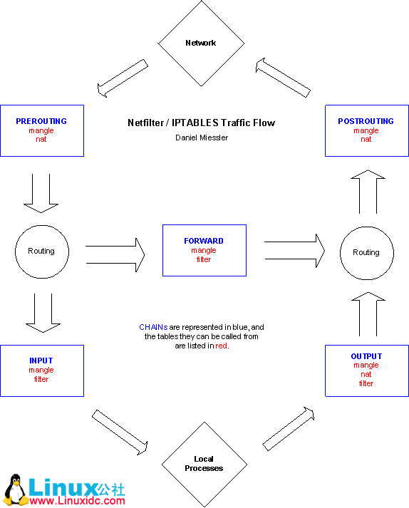
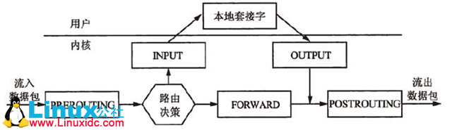

表和链
这一章首先来讨论数据包是以什么顺序、如何穿越不同的链和表的。稍后，在写规则时，就会知道这个顺序是多么的重要。一些组件是iptables与内核共用的，比如，数据包路由的判断。了解到这一点是很重要的，尤其在用iptables改变数据包的路由时。这会帮助你弄明白数据包是如何以及为什么被那样路由，一个好的例子是 DNAT 和 SNAT ，不要忘了 TOS 的作用
概述
当数据包到达防火墙时，如果MAC地址符合，就会由内核里相应的驱动程序接收，然后会经过一系列操作，从而决定是发送给本地的程序，还是转发给其他机子，还是其他的什么
先来看一个以本地为目的的数据包，它要经过以下步骤才能到达要接收它的程序：
下文中有个词 mangle ，这个词表达的意思是，会对数据包的一些传输特性进行修改，在mangle表中允许的操作是 TOS 、 TTL 、 MARK 。也就是说，今后只要见到这个词能理解它的作用就行了
发到本机的包
| Step | Table | Chain | Comment |
| 1 | 在线路上传输(比如，Internet) | ||
| 2 | 进入接口 (比如， eth0) | ||
| 3 | mangle | PREROUTING | 这个链用来mangle数据包，比如改变TOS等 |
| 4 | nat | PREROUTING | 这个链主要用来做DNAT。不要在这个链做过虑操作，因为某些情况下包会溜过去 |
| 5 | 路由判断，比如包是发往本地的，还是要转发的 | ||
| 6 | mangle | INPUT | 在路由之后，被送往本地程序之前，mangle数据包 |
| 7 | filter | INPUT | 所有以本地为目的的包都要经过这个链，不管它们从哪儿来，对这些包的过滤条件就设在这里 |
| 8 | 到达本地程序了(比如，服务程序或客户程序) |
从本机发出的包
| Step | Table | Chain | Comment |
| 1 | 本地程序（比如，服务程序或客户程序） | ||
| 2 | 路由判断，要使用源地址，外出接口，还有其他一些信息。 | ||
| 3 | mangle | OUTPUT | 在这儿可以mangle包。建议不要在这儿做过滤，可能有副作用哦 |
| 4 | nat | OUTPUT | 这个链对从防火墙本身发出的包进行DNAT操作 |
| 5 | filter | OUTPUT | 对本地发出的包过滤 |
| 6 | mangle | POSTROUTING | 这条链主要在包DNAT之后(作者把这一次DNAT称作实际的路由，虽然在前面有一次路由。对于本地的包，一旦它被生成，就必须经过路由代码的处理，但这个包具体到哪儿去，要由NAT代码处理之后才能确定。所以把这称作实际的路由。)，离开本地之前，对包mangle。有两种包会经过这里，防火墙所在机子本身产生的包，还有被转发的包 |
| 7 | nat | POSTROUTING | 在这里做SNAT。但不要在这里做过滤，因为有副作用，而且有些包是会溜过去的，即使你用了DROP策略 |
| 8 | 离开接口(比如： eth0) | ||
| 9 | 在线路上传输(比如，Internet) |
被转发的包
| Step | Table | Chain | Comment |
| 1 | 在线路上传输(比如 Internet) | ||
| 2 | 进入接口（比如 eth0） | ||
| 3 | mangle | PREROUTING | mangle数据包，比如改变TOS等。 |
| 4 | nat | PREROUTING | 这个链主要用来做DNAT。不要在这个链做过虑操作，因为某些情况下包会溜过去。稍后会做SNAT |
| 5 | 路由判断，比如包是发往本地的，还是要转发的 | ||
| 6 | mangle | FORWARD | 包继续被发送至mangle表的FORWARD链，这是非常特殊的情况才会用到的。这次mangle发生在最初的路由判断之后， 在最后一次更改包的目的之前（就是下面的FORWARD链所做的，因其过滤功能，可能会改变一些包的目的地，如丢弃包） |
| 7 | filter | FORWARD | 包继续被发送至这条FORWARD链。只有需要转发的包才会走到这里，并且针对这些包的所有过滤也在这里进行。注意，所有要转发的包都要经过这里，不管是外网到内网的还是内网到外网的。在自己书写规则时，要考虑到这一点 |
| 8 | mangle | POSTROUTING | 这个链也是针对一些特殊类型的包（参考第6步， 可以发现，在转发包时，mangle表的两个链都用在特殊的应用上）。这一步mangle是在所有更改包的目的地址的操作完成之后做的，但这时包还在本地上 |
| 9 | nat | POSTROUTING | 这个链就是用来做SNAT的，当然也包括Masquerade（伪装）。但不要在这儿做过滤，因为某些包即使不满足条件也会通过 |
| 10 | 离开接口(比如 eth0) | ||
| 11 | 又在线路上传输了(比如 LAN) |
总结

要弄清楚上面的图，可以这样考虑。在第一个路由判断处：
- 不是发往本地的包，会发送它穿过 FORWARD 链
- 若包的目的地是本地监听的IP地址，就会发送这个包穿过 INPUT 链，最后到达本地
- 如果是发出去的包，则首先进入OUTPUT

注意：
- 对不同的网卡接口，是没有什么特殊的链和表的
- 在做NAT的过程中，发往本机的包的目的地址可能会在PREROUTING链里被改变。这个操作发生在第一次路由之前，所以在地址被改变之后，才能对包进行路由
- 所有的包都会经过上图中的某一条路径。如果把一个包 DNAT 回它原来的网络，这个包会继续走完相应路径上剩下的链，直到它被发送回原来的网络
- 不要在 INPUT 链上做过滤。INPUT是专门用来操作那些以自己的机子为目的地址的包的，它们不会被路由到其它地方的
mangle表
这个表主要用来mangle包，可以使用mangle匹配来 改变包的TOS 等特性
以下是mangle表中仅有的几种操作：
- TOS : 设置或改变数据包的服务类型域 。这常用来设置网络上的数据包如何被路由等策略。 注意这个操作并不完善，有时得不所愿。它在Internet上还不能使用，而且很多路由器不会注意到 这个域值。换句话说，不要设置发往Internet的包，除非打算依靠TOS来路由，比如用iproute2
- TTL : 改变数据包的生存时间域 ，可以让所有数据包只有一个特殊的TTL。它的存在有一个很好的理由，那就是可以欺骗一些ISP。因为他们不愿意让我们共享一个连接。那些ISP会查找一台单独的计算机是否使用不同的TTL，并且以此作为判断连接是否被共享的标志
- MARK : 给包设置特殊的标记 。iproute2能识别这些标记，并根据不同的标记（或没有标记）决定不同的路由。用这些标记可以做带宽限制和基于请求的分类
注意： 强烈建议不要在这个表里做任何过滤 ，不管是 DANT ， SNAT 或者 Masquerade
nat表
此表仅用于NAT，也就是 转换包的源或目标地址 ：
- DNAT : 改变的是目的地址 ，以使包能重路由到某台主机。往往是有一个合法的公共IP地址，要把对防火墙的访问重定向到其他的机子上（比如DMZ）
- SNAT : 改变包的源地址 ，这在极大程度上可以隐藏你的本地网络或者DMZ等。我们知道防火墙的外部地址，但必须用这个地址替换本地网络地址。有了这个操作，防火墙就能自动地对包做SNAT和De-SNAT(就是反向的SNAT),以使LAN能连接到Internet。如果使用类似 192.168.0.0/24 这样的地址，是不会从Internet得到任何回应的。因为IANA定义这些网络（还有其他的）为 私有的 ，只能用于LAN内部
- MASQUERADE : 作用和 SNAT 完全一样，只是计算机的负荷稍微多一点。因为对每个匹配的包，MASQUERADE都要查找可用的IP地址，而不象SNAT用的IP地址是配置好的。当然，这也有好处，就是可以使用通过PPP、 PPPOE、SLIP等拨号得到的地址，这些地址可是由ISP的DHCP随机分配的
注意： 只有流的第一个包会被这个链匹配，其后的包会自动被做相同的处理